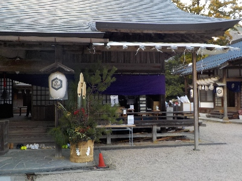
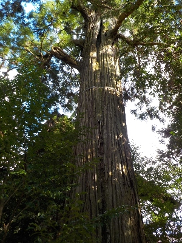
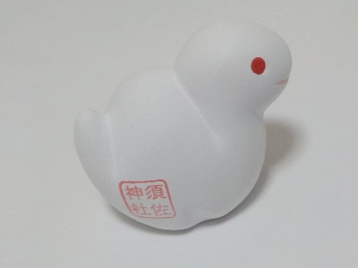
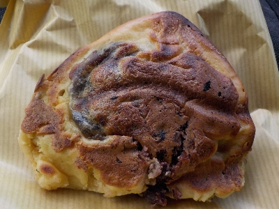
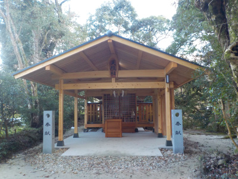
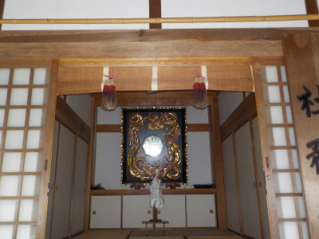
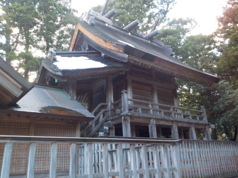
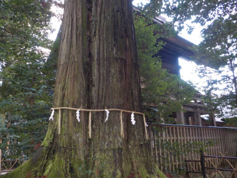
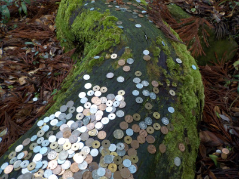
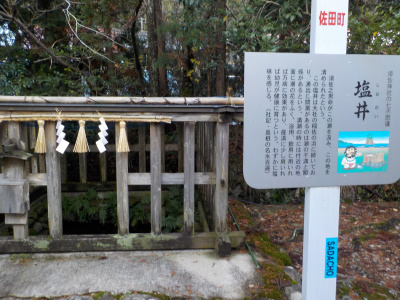

お正月は須佐神社に観光に行きました。
2025/01/03

お正月なので神社に観光に行きました。門松とかおみくじとか正月気分になれますね。

須佐神社といえばこの木です。私が行った時は地元の人が多かったみたいで、まじまじと見ている人は少なかったです。

置物タイプのおみくじを引きました。須佐神社って書いてあるのは行った記念になっていいですね。

帰りに栗まんじゅうを買って食べました。餡子が多くて美味しかったです。
初詣は須佐神社に行きました。
2019/01/03
近くの温泉は何度か行きましたが、須佐神社は初めてです。

最初に天照社に行きました。新しい建物でした。

社務所には鏡がありました。
鏡は少し下を向いていて、自分の顔を見ることができました。
距離があるんですがよく見えました。ちょっと不思議な感じがしました。

本殿です。

本殿の奥にある杉の木です。
パワースポットで有名ですね。巨木なのでそれだけで凄い！って思いそうなんですが、意外と威圧感とかなくて、自然な感じがしました。

杉の根っこにはお賽銭が置いてありました。
ちょっと綺麗でした。

塩水が出るという塩井です。
水が飲めるようになってて、飲んでみたんですが塩は感じられませんでした。
でも水道水と全然違う感じがしました。
須佐神社の感想ですが、落ち着いた雰囲気でのんびりできました。
今日はお正月で人が多いと思うんですが、普段の空いた時だったらもっといいんだろうなーと思いました。